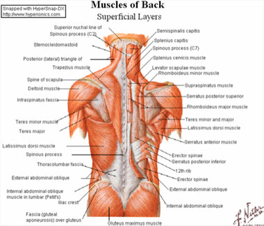
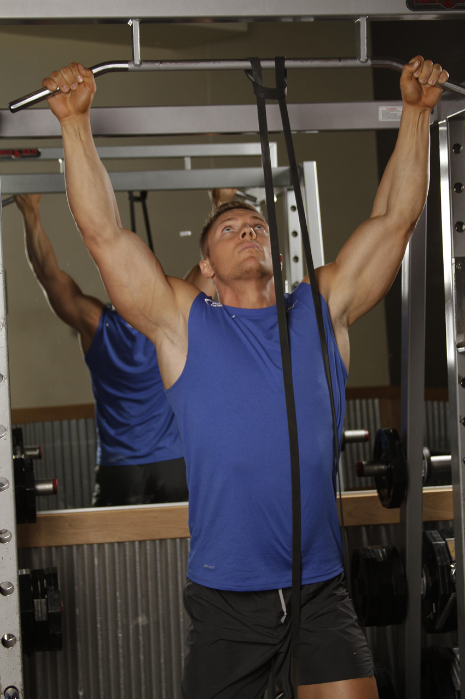
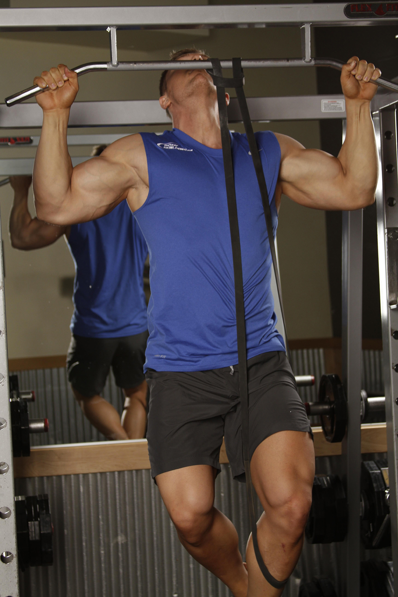
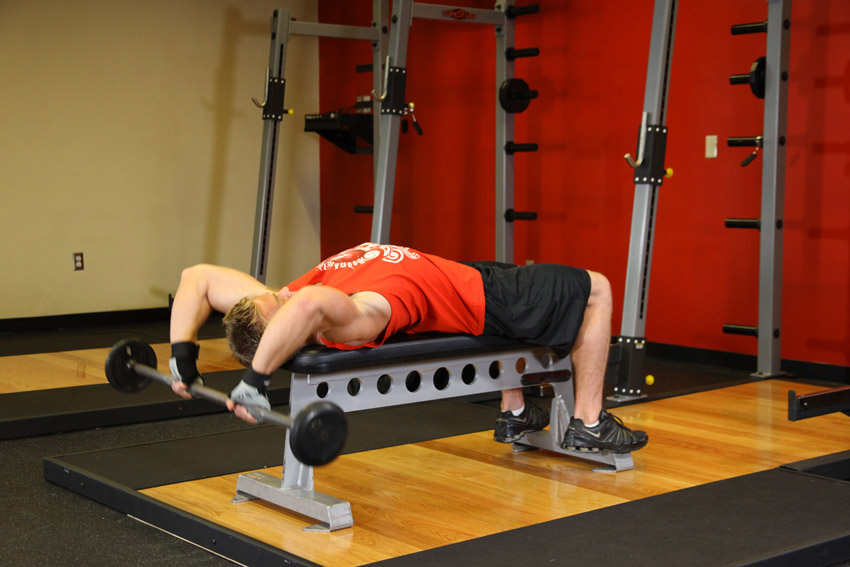
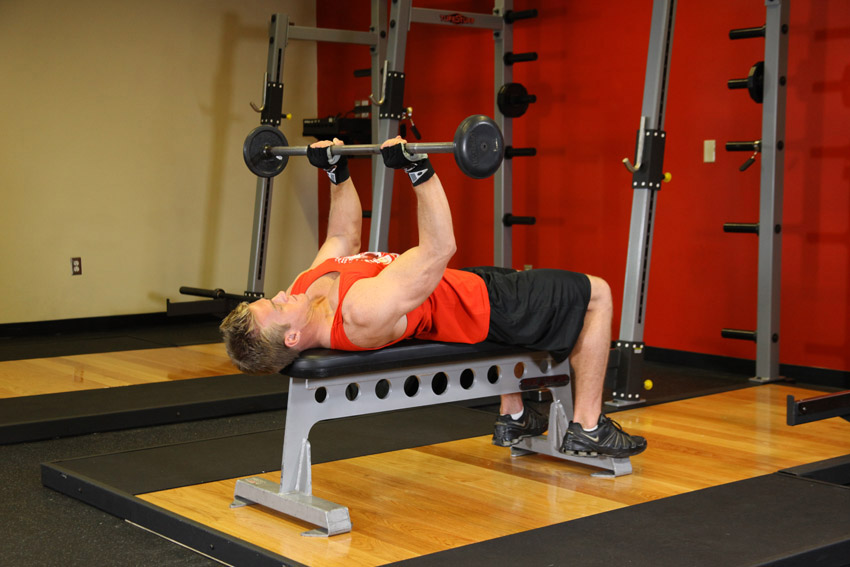
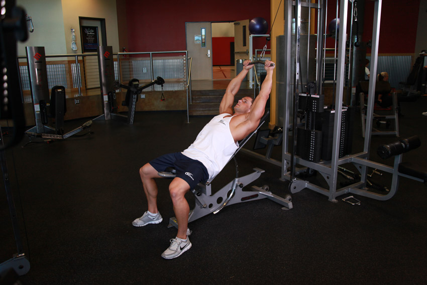
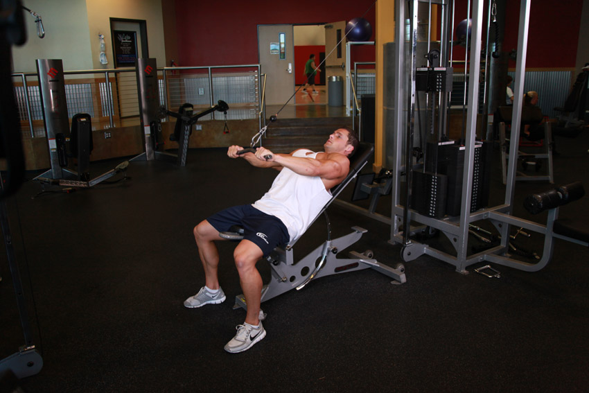
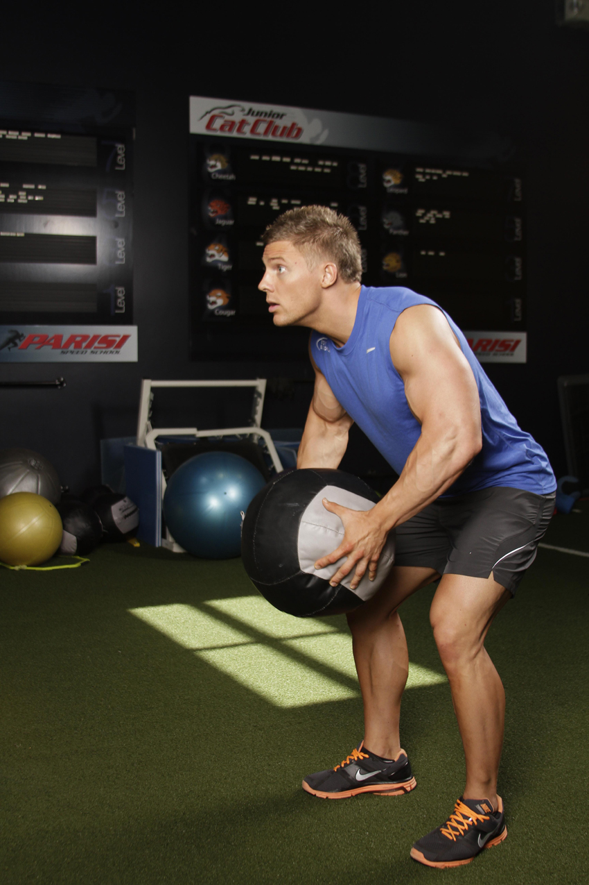
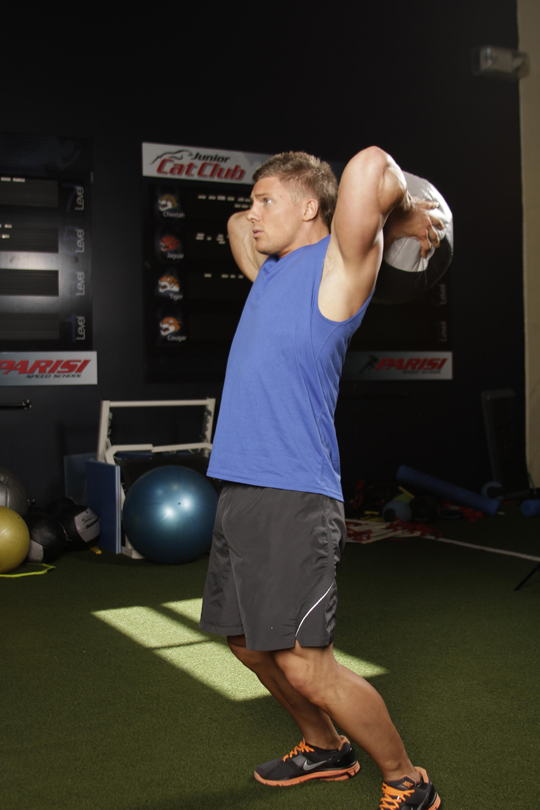

<!DOCTYPE html PUBLIC "-//W3C//DTD XHTML 1.0 Strict//EN" "http://www.w3.org/TR/xhtml1/DTD/xhtml1-strict.dtd">
<!--
Design by Free CSS Templates
http://www.freecsstemplates.org
Released for free under a Creative Commons Attribution 2.5 License

Name       : Open-Air
Description: A two-column, fixed-width design with dark color scheme.
Version    : 1.0
Released   : 20120818

-->
<html xmlns="http://www.w3.org/1999/xhtml"/>
<?php
session_start();
include('mygymdbConnect.php');
include('SignUp.php');
?>
<html>
    <head>
        <title> MyGym</title>
        <div style="position :absolute;top:20px;left:40px">
            <p><h2>MY<br/> 
                    GYM 
                    <br/></h2></p></div>
        <div style="position: absolute ;left:  200px; top: 20px;"> </div>
        <div style="position:absolute;top:37%;left:35%"/>
        <link href="http://fonts.googleapis.com/css?family=Oswald:400,300" rel="stylesheet" type="text/css" />         

        <link href="style.css" rel="stylesheet" type="text/css" media="screen" />
        <a href="home.php" style="text-decoration: none;color: black;font:serif;font-weight: bold;  ">Home |</a>
        <a href="About.html" style="text-decoration: none;color: black;font:serif;font-weight: bold;  ">About |</a>
        <a href="sign up.html" style="text-decoration: none;color: black;font:serif;font-weight: bold;  ">Sign up |</a>
        <a href="Activities.html" style="text-decoration: none;color: black;font:serif;font-weight: bold;  ">Activities |</a>
        <a href="Trainers.html" style="text-decoration: none;color: black;font:serif;font-weight: bold;  ">Trainers |</a>
        <a href="classes.html" style="text-decoration: none;color: black;font:serif;font-weight: bold;  ">Classes |</a>
        <a href="Training.html" style="text-decoration: none;color: black;font:serif;font-weight: bold;  ">Train |</a>   

    </head>

    <body>
        <div style="position: absolute;left: -300px">
            <table  cellpadding="10" cellspacing="10" height="400px" width="1200px">
                <tr><td></img></td>
                    <td><b>Description</b><br></br>The latissimus dorsi, meaning 'broadest muscle of the back', is the larger, flat, dorso-lateral muscle on the trunk, posterior to the arm, and partly covered by the trapezius on its median dorsal region. Latissimi dorsi are commonly known as "lats", especially among bodybuilders.
                        The latissimus dorsi is responsible for extension, adduction, transverse extension also known as horizontal abduction, flexion from an extended position, and internal rotation of the shoulder joint. It also has a synergistic role in extension and lateral flexion of the lumbar spine.
                        Due to bypassing the scapulothoracic joints and attaching directly to the spine, the actions the latissimi dorsi have on moving the arms can also influence the movement of the scapulae, such as their downward rotation during a pull up.     
                        <div style="position: absolute;left: -200px;top: 500px" >
                            <table border="2"  cellpadding="10" cellspacing="10" align="center">
                                <tr><td><b>EXERCISES</b></td></tr>
                                <tr><td></img></br>
                                        </img></td>
                                    <td><b>Band Assisted Pull-Up</b>
                                        </br>1-Choke the band around the center of the pullup bar. You can use different bands to provide varying levels of assistance.
                                        </br>2-Pull the end of the band down, and place one bent knee into the loop, ensuring it won't slip out. Take a medium to wide grip on the bar. This will be your starting position.
                                        </br>3-Pull yourself upward by contracting the lats as you flex the elbow. The elbow should be driven to your side. Pull to the front, attempting to get your chin over the bar. Avoid swinging or jerking movements.
                                        </br>4-After a brief pause, return to the starting position.

                                    </td>
                                </tr>
                                <tr><td></img></br>
                                        </img></td>
                                    <td><b>Bent-Arm Barbell Pullover</b>
                                        </br>1-Lie on a flat bench with a barbell using a shoulder grip width.
                                        </br>2-Hold the bar straight over your chest with a bend in your arms. This will be your starting position.
                                        </br>3-While keeping your arms in the bent arm position, lower the weight slowly in an arc behind your head while breathing in until you feel a stretch on the chest.
                                        </br>4-At that point, bring the barbell back to the starting position using the arc through which the weight was lowered and exhale as you perform this movement.
                                        </br>5-Hold the weight on the initial position for a second and repeat the motion for the prescribed number of repetitions.
                                    </td>
                                </tr>
                                <tr><td></img></br>
                                        </img></td>
                                    <td><b>Cable Incline Pushdown</b>
                                        </br>1-Lie on incline an bench facing away from a high pulley machine that has a straight bar attachment on it.
                                        </br>2-Grasp the straight bar attachment overhead with a pronated (overhand; palms down) shoulder width grip and extend your arms in front of you. The bar should be around 2 inches away from your upper thighs. This will be your starting position.
                                        </br>3-Keeping the upper arms stationary, lift your arms back in a semi circle until the bar is straight over your head. Breathe in during this portion of the movement.
                                        </br>4-Slowly go back to the starting position using your lats and hold the contraction once you reach the starting position. Breathe out during the execution of this movement.
                                    </td>
                                </tr>
                                <tr><td></img><br></br>
                                        </img>  </td>
                                    <td><b>Catch and Overhead Throw</b>
                                        </br>1-Begin standing while facing a wall or a partner.
                                        </br>2-Using both hands, position the ball behind your head, stretching as much as possible, and forcefully throw the ball forward.
                                        </br>3-Ensure that you follow your throw through, being prepared to receive your rebound from your throw. If you are throwing against the wall, make sure that you stand close enough to the wall to receive the rebound, and aim a little higher than you would with a partner.

                                    </td>
                                </tr>
                            </table>
                        </div>
                        </body>
                        </html>